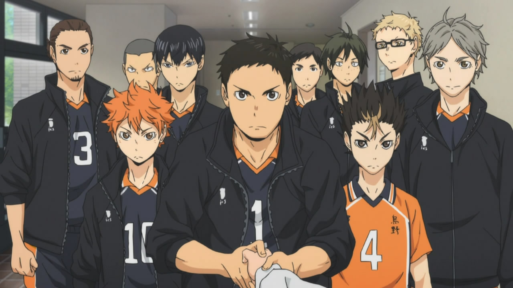
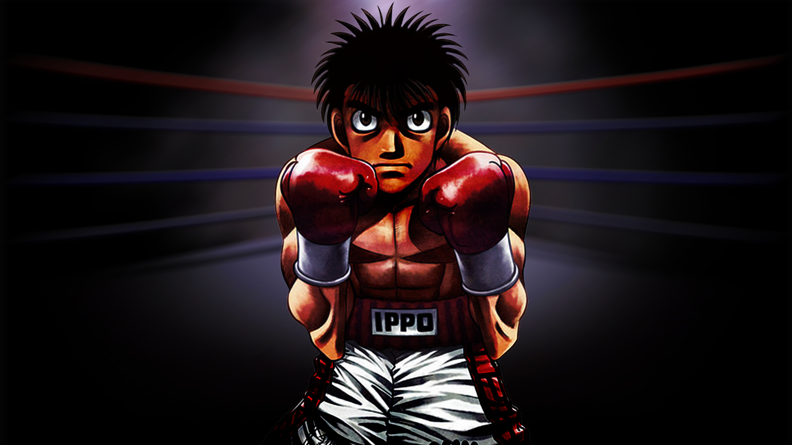

Sports anime:
Haikyuu!! (2014 - Ongoing)

Hajime no Ippo (2000- 2014)

Genre: Sports, Slice of Life, Drama, Action
Haikyuu!! Receives an 8/10 rating. This anime has 4 seasons with 90 episodes and it is still
ongoing. This anime centers around a group of young men who are on their high school's
volleyball team. Most of the anime you will see the everyday life of high school athletes. If
you were a high school athlete, you may find yourself taking a liking to this anime just as I
did: no matter what sport you played! Day in and out they are practicing and having to do
their best academically as well. Problems arise such as team members getting injured right
before a big game, team members not getting along, some team members do not make the
best life-choices, and many other "coming of age"/ athlete/ everyday high school student
problems. This anime receives an 8/10 rating because at times it will seem slow/boring. This
is because it is centering around high school students. Yes, most of it will be a fun watch
since it is a mixture of action and "coming of age" drama, but there are quieter times that are
not as interesting, such as the team members hanging out after school, doing chores, being
with family, and so on.
Genre: Sports, Action, Drama, Slice of Life
8/10 rating. Overall, ‘Hajime no Ippo’ is a well-rounded anime that has a combination of
some epic fight scenes that will get you all hyped up, heart-touching moments that will make
you sad for a while and most of all, a very motivating overarching plot that’ll make your heart
swell with joy. Makunouchi Ippo is an ordinary high school student in Japan. Since he spends
most of his time away from school helping his mother run the family business, he doesn't get
to enjoy his younger years like most teenagers. Always a target for bullying at school (the
family fishing business grants him a distinct odor), Ippo's life is one of hardship. One of these
after-school bullying sessions turns Ippo's life around for the better, as he is saved by a boxer
named Takamura. He decides to follow in Takamura's footsteps and train to become a boxer,
giving his life direction and purpose. Ippo's path to perfecting his pugilistic prowess is just
beginning.